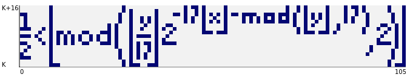
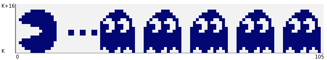
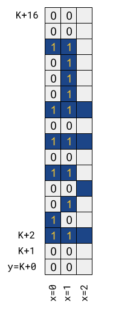
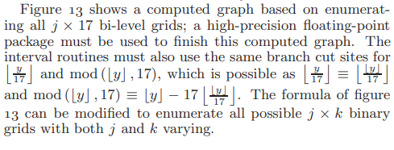
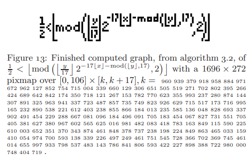

A book I was recently reading mentioned a mathematical curiosity I haven't seen before - Tupper's self-referential formula. There are some resources about it online, but this post is my attempt to explain how it works - along with an interactive implementation you can try in the browser.
Tupper's formula
Here is the formula:
We want to plot this formula, but how?
For this purpose, it's more useful to think of Tupper's formula not as a function but as a relation, in the mathematical sense. In Tupper's paper this is a relation on , meaning that it's a set of pairs in that satisfy the inequality.
For our task we'll use discrete indices for x and y, so the relation is on . We'll plot the relation by using a dark pixel (or square) for a x,y coordinate where the inequality holds and a light pixel for a coordinate where it doesn't hold.
The "mind-blowing" fact about Tupper's formula is that when plotted for a certain range of x and y, it produces this:
Note that while x runs in the inclusive range of 0-105 on the plot, y starts at a mysterious K and ends at K+16. For the plot above, K needs to be:
4858450636189713423582095962494202044581400587983244549483
0930850619347047088099284506447698655243648499972470249151
1911041160573917740785691975432657185544205721044573588368
1829823754139634338225199452191651284348332905131193199953
5024137587652392648746133949068701305622958132194811136853
3953556529085002387509285689269455597428154638651073004910
6723058933586052544096664351265349363643957125565695936815
1843348576052669401612512669514215505395545191537854575257
5659074054015792900176596796548006442782913148854825991472
1248506352686630476300
The amazement subsides slightly when we discover that for a different K [1], we get a different plot:
And, in fact, this formula can produce any 2D grid of 106x17 pixels, given the right coordinates. Since the formula itself is so simple, it is quite apparent that the value of K is the key here; these are huge numbers with hundreds of digits, so clearly they encode the image information somehow. Read on to see how this actually works.
A JavaScript demo
I've implemented a simple online demo of plotting the Tupper formula - available at https://eliben.github.io/tupperformula/ (with source code on GitHub). It was used to produce the images shown above. The code is fairly straightforward, so I'll just focus on the interesting part.
The core of the code is a 2D grid that's plotted for x running from 0 to 105 and y from K to K+16 (both ranges inclusive). The grid is populated every time the number changes:
const GridWidth = 106;
const GridHeight = 17;
let K = BigInt(Knum.value);
for (let x = 0; x < GridWidth; x++) {
for (let y = 0; y < GridHeight; y++) {
Grid.setCell(x, y, tupperFormula(BigInt(x), K + BigInt(y)));
}
}
Note the use of JavaScript's BigInt types here - very handy when dealing with such huge numbers. Here is tupperFormula:
function tupperFormula(x, y) {
let d = (y / 17n) >> (17n * x + y % 17n);
return d % 2n == 1n;
}
It looks quite different from the mathematical formula at the top of this post; why? Because - as mentioned before - while Tupper's original formula works on real numbers, our program only needs the discrete integer range of x in [0, 105] and y in [K, K+16]. When we deal with discrete numbers, the formula can be simplified greatly.
Let's start with the original formula and simplify it step by step:
First of all, since x and y are natural numbers, the floor operations on them don't do anything, so we can drop them (including on the division by 17, if we just assume integer division that rounds down by default):
Next, since the result of the operation for a natural N is either 0 or 1, the comparison to half is just a fancy way of saying "equals 1"; we can replace the inequality by:
Note the negative power of 2; multiplying by it is the same as dividing by its positive counterpart. Another way to express division by for natural numbers is a bit shift right by p bits. So we get the code of the tupperFormula function shown above:
let d = (y / 17n) >> (17n * x + y % 17n);
return d % 2n == 1n;
How the Tupper formula works
The distillation of the Tupper to JS code already peels off a few layers of mystery. Let's now remove the rest of the curtain on its inner workings.
I'll start by explaining how to take an image we want the formula to produce and encode it into K. Here are the first three columns of the Tupper formula plot:
Each pixel in the plot is converted to a bit (0 for light, 1 for dark). We start at the bottom left corner (x=0 and y=K), which is the LSB (least-significant bit) and move up through the first column; when we reach the top (x=0 and y=K+16), we continue from the bottom of the next column (x=1 and y=K). In the example above, the first bits (from lowest to highest) of the number are:
00110010101000100 00101010101111100 ...
Once we're done with the whole number (106x17 = 1802 bits), we convert it to decimal - let's call this number IMG, and multiply by 17. The result is K.
Now back to tupperFormula, looking at how it decodes the image back from x and y (recall that y runs from K to K+16). Let's work through the first coordinate in detail:
For x=0 and y=K, in tupperFormula we get:
d = (y/17) >> (17x + y%17)
...
substitute x=0, y=K (and recall that K = IMG * 17)
...
d = IMG >> 0
In other words, d is the lowest bit of IMG - the lowest bit of our image! We can continue for x=0 and y=K+1:
d = (y/17) >> (17x + y%17)
...
substitute x=0, y=K+1 (and recall that K = IMG * 17)
...
d = IMG >> 1
Here d is the second lowest bit of IMG. The pattern should be clear by now.
d = (y/17) >> (17x + y%17)
...
x=0 y=K+2: IMG >> (0 + 2)
x=0 y=K+3: IMG >> (0 + 3)
...
x=0 y=K+16 IMG >> (0 + 16)
x=1 y=K: IMG >> (17 + 0)
x=1 y=K+1: IMG >> (17 + 1)
x=1 y=K+2: IMG >> (17 + 2)
The formula simply calculates the correct bit of IMG given x and y, using a modular arithmetic trick to "fold" the 2D x and y into a 1D sequence (this is just customary column-major layout).
This is why the formula can plot any 106x17 grid, given the right K. In the formula, 17 is not some piece of magic - it's just the height of the grid. As an exercise, you can modify the formula and code to plot larger or smaller grids.
As a bonus, the JavaScript demo can also encode a grid back to its representative K; here's the code for it:
// Calculate K value from the grid.
function encodeGridToK() {
let kval = BigInt(0);
// Build up K from MSB to LSB, scanning from the top-right corner down and
// then moving left by column.
for (let x = GridWidth - 1; x >= 0; x--) {
for (let y = GridHeight - 1; y >= 0; y--) {
kval = 2n * kval + BigInt(Grid.getCell(x, y));
}
}
return kval * 17n;
}
It constructs K starting with the MSB, but otherwise the code is straightforward to follow.
Background
The formula was first describe by Jeff Tupper in a 2001 paper titled "Reliable Two-Dimensional Graphing Methods for Mathematical Formulae with Two Free Variables". The paper itself focuses on methods of precisely graphing relations and presents several algorithms to do so. This formula is described in passing in section 12, and presented as follows:
And Figure 13 is:
Interestingly, the K provided by Tupper's paper renders the formula flipped on both the x and y axes using the standard grid used in this post [2]. This is why my JavaScript demo has flip toggles that let you flip the axes of any plot.
| [1] | This would be |
1445202489708975828479425373371945674812777822151507024797
1881396854908873568298734888825132090576643817888323197692
3440016667764749242125128995265907053708020473915320841631
7920255490054180047686572016997304663833949016013743197155
2099618114524978194501906835950051065780432564080119786755
6863142280259694206254096081665642417367403946384170774537
4273196064438999230103793989386750257869294552344763192918
6095761834543224800492172803334941981620674985447203819393
9738513848960476759782673313437697051994580681869819330446
336774047268864
| [2] | I can totally see why the y axis would be flipped: in computer programs the concept of the y axis is represented as rows in a grid which typically count from 0 on top and downwards. It's less clear to me how the inversion on the x axis came to be. |